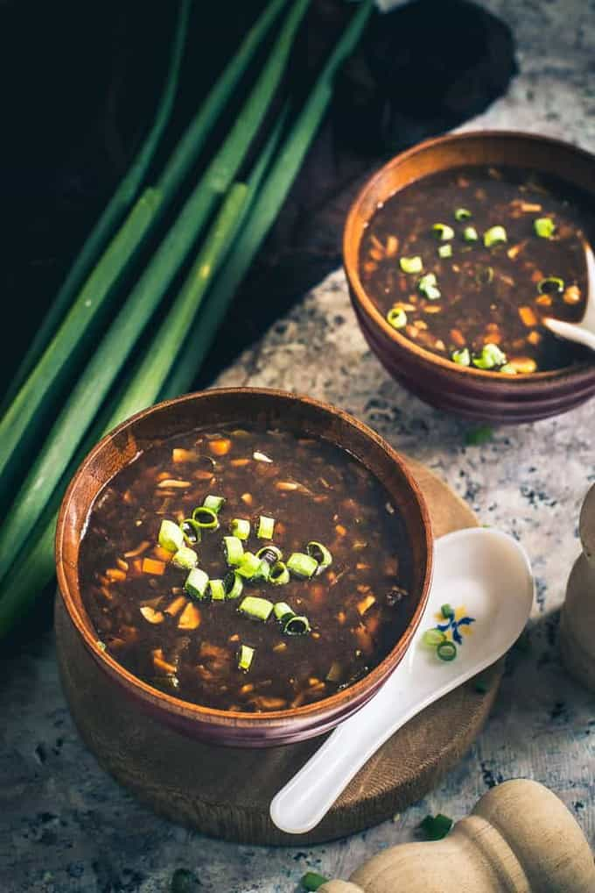

Hot and Sour Soup

In this vegetarian hot and sour soup, you won’t miss the meat, as hot and sour soup already traditionally
gets umami from vegetarian ingredients like dried shiitake mushrooms
Ingerdients:
- Broth: Veg / Chicken
- Mushrooms: wood ear & Shiitake
- Green Onions
- Pepper & Salt
- Bamboo Shoot
- Green Chilies
- Rice Vingear, Soy Sauce, Chili ginger Sauce, Ground Ginger -- flavors the Broth
- Toasted Sesame Oil
- Chili Flakes
- Firm Tofu
- Corn Starch
Steps
- Start with soaking the wood ears, and shiitake mushrooms in 1 cup of hot water each for 1 hour,
until hydrated. Reserve the shiitake mushroom soaking water
- Roughly chop the wood ears, and thinly slice the shiitake mushrooms. Cut the spiced tofu into
thin 2 inch-long slices. Cut the tofu into ¼ inch thick pieces, also about 2 inches long
- Add the stock and strained mushroom soaking water to a large soup pot, and bring to a boil. Add the salt,
sugar, dried chili pepper (if using), white pepper, soy sauce, and toasted sesame oil
- wood ears, shiitake mushrooms, and bamboo shoots. Bring the soup to a simmer, and stir in the
spiced tofu, firm tofu, and vinegar
- Combine the cornstarch with ¼ cup water to make a slurry. Ensure its
well-combined, as the cornstarch tends to settle to the bottom of the bowl
- Bring the mixture to a simmer and use your soup ladle to stir the soup in a steady circular
motion to make a whirlpool while slowly drizzling in the cornstarch slurry. This prevents
the cornstarch from clumping. Simmer for another 30 seconds to thicken
- Taste the soup and adjust seasonings to your preference. Add more white pepper if
you like it spicier. You can also add more vinegar, soy sauce, or salt
- With the soup simmering/bubbling lightly, stir the soup in a circular motion once again, add the scallions,
and serve